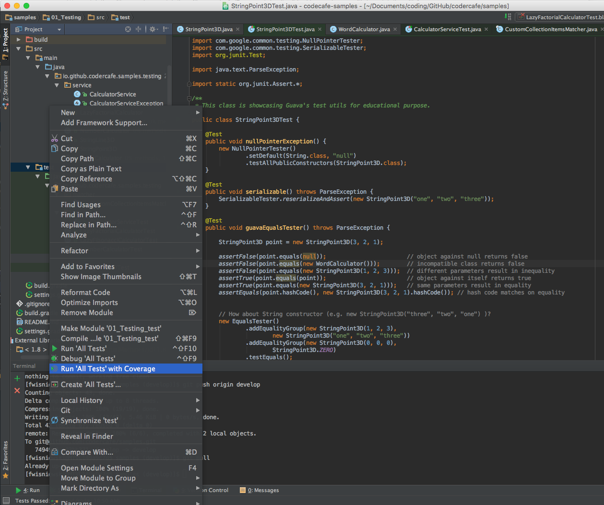

"I don't know how to write tests."
"I don't have enough time to write tests."
"Testing is not my job."
"Writing tests is too hard."
"My code is too simple for tests."
...
public class NumberCalculator {
public String add(int x, int y) {...};
public String subtract(int minuend, int sutrahend) {...};
public String multiply(int x, int y) {...};
public String divide(int divident, int divisor) {...};
public List<String> primeFactorization(int number) {...};
}
calculator.divide(12, 3) // returns "four"
calculator.divide(-10, 4) // returns "minus two point five"
calculator.primeFactorization(35) // returns ["five", "seven"]
@Test
public void add() {
NumberCalculator calculator = new NumberCalculator();
assertEquals("fifteen", calculator.add(12, 3));
assertEquals("fourteen", calculator.add(10, 4));
assertEquals("minus seven", calculator.add(7, -14));
}
@Test
public void divide() {
NumberCalculator calculator = new NumberCalculator();
assertEquals("four", calculator.divide(12, 3));
assertEquals("two point five", calculator.divide(10, 4));
assertEquals("minus two point five", calculator.divide(-10, 4));
}
@Ignore("Order does matter")
@Test
public void primeFactorization() {
NumberCalculator calculator = new NumberCalculator();
assertEquals(calculator.primeFactorization(35), Arrays.asList("five", "seven"));
assertEquals(calculator.primeFactorization(35), Arrays.asList("seven", "five"));
}
@Test
public void divideWithMatchers() {
NumberCalculator calculator = new NumberCalculator();
assertThat(calculator.divide(12, 3), is(equalTo("four")));
assertThat(calculator.divide(10, 4), is(equalTo("two point five")));
}
@Test
public void primeFactorization() {
NumberCalculator calculator = new NumberCalculator();
assertThat(calculator.primeFactorization(350), hasItems("two", "five", "seven"));
// fyi: 350 = 2 * 5 * 5 * 7
}
@Test
public void primeFactorizationCustomMatcher() {
NumberCalculator calculator = new NumberCalculator();
assertThat(calculator.primeFactorization(350), hasAllItems("two", "five", "five", "seven"));
assertThat(calculator.primeFactorization(350), not(hasAllItems("two", "five", "seven")));
// fyi: 350 = 2 * 5 * 5 * 7
}
public final class CustomCollectionItemsMatcher extends TypeSafeMatcher<Collection<String>> {
private final String[] items;
private CustomCollectionItemsMatcher(String... items) {
this.items = items;
}
public static Matcher<Collection<String>> hasAllItems(String... items) {
return new CustomCollectionItemsMatcher(items);
}
@Override
protected boolean matchesSafely(Collection<String> item) {
if (items.length != item.size()) {
return false;
}
Map<String, Long> counts = item.stream()
.collect(groupingBy(element -> element, counting()));
return !counts.keySet().stream()
.anyMatch(value -> Collections.frequency(item, value) != counts.get(value));
}
@Override
public void describeTo(Description description) {
description.appendText("a collection containing ")
.appendValue(items)
.appendText(" in arbitrary order");
}
}
BaseMatcher implements describeMismatch and toStringCustomMatcher extends BaseMatcher and implements describeToTypeSafeMatcher extends BaseMatcher and implements type safety and not nullCustomTypeSafeMatcher extends TypeSafeMatcher and implements describeToTypeSafeDiagnosingMatcher implements BaseMatcher, type safety and not null with diagnostics
@Test(expected = ArithmeticException.class)
public void divideByNull() {
NumberCalculator calculator = new NumberCalculator();
... // some calls and asserts
calculator.divide(12, 0);
}
@Rule
public final ExpectedException expected = ExpectedException.none();
@Test
public void divideByNullTestRule() {
NumberCalculator calculator = new NumberCalculator();
expected.expect(ArithmeticException.class);
expected.expectMessage("Cannot divide by null");
calculator.divide(12, 0);
}
public class CalculatorService {
private NumberCalculator numberCalculator;
private WordCalculator wordCalculator;
public CalculatorService(WordCalculator wordCalculator) {
this.numberCalculator = new NumberCalculator();
this.wordCalculator = wordCalculator;
}
public String mixedAdd(int a, String b) {
try {
return numberCalculator.add(a, wordCalculator.parseInt(b));
} catch (ParseException ex) {
throw new CalculatorServiceException("Something went wrong", ex);
}
}
}
@RunWith(MockitoJUnitRunner.class)
public class CalculatorServiceTest {
...
}
@Rule
public MockitoRule rule = MockitoJUnit.rule();
@Before
public void initMocks() {
MockitoAnnotations.initMocks(this);
}
@Mock
@Mock
private WordCalculator wordCalculator;
@Test
public void testMixedAdd() throws Exception {
when(wordCalculator.parseInt(anyString())).thenReturn(42);
CalculatorService calculatorService = new CalculatorService(wordCalculator);
String result = calculatorService.mixedAdd(42, "123");
assertThat(result, is(equalTo("eighty-four")));
verify(wordCalculator, never()).add(anyString(), anyString());
}
alternative:
// YOU need to take care of the life cycle!!!
WordCalculator wordCalculator = mock(WordCalculator.class);
@Spy
@Spy
private WordCalculator wordCalculatorSpy = new WordCalculator();
@Test
public void testMixedAddWithSpy() throws Exception {
CalculatorService calculatorService = new CalculatorService(wordCalculatorSpy);
String result = calculatorService.mixedAdd(42, "42");
assertThat(result, is(equalTo("eighty-four")));
verify(wordCalculatorSpy, times(1)).parseInt(anyString());
verify(wordCalculatorSpy, never()).add(anyString(), anyString());
}
alternative:
WordCalculator wordCalculatorSpy = spy(new WordCalculator());
WordCalculator wordCalculatorSpy = spy(WordCalculator.class);
Overusing spies hints at code design smells.
@Captor
@Captor
ArgumentCaptor<Integer> captor;
@Test
public void testMixedAddWithWhiteboxAndCaptor() throws Exception {
CalculatorService calculatorService = new CalculatorService(wordCalculator);
Whitebox.setInternalState(calculatorService, "numberCalculator", numberCalculator);
when(wordCalculator.parseInt(anyString())).thenReturn(42);
when(numberCalculator.add(captor.capture(), captor.capture())).thenReturn("123");
calculatorService.mixedAdd(123, "123");
assertThat(captor.getAllValues(), contains(123, 42));
verify(wordCalculator, never()).add(anyString(), anyString());
}
alternative:
ArgumentCaptor<Integer> captor = ArgumentCaptor.forClass(Integer.class);
@InjectMocksMake your dependencies visible
ArrayList[1] mockito.org
Using PowerMock hints at code design smells.
public class StringPoint3D implements Serializable {
public final String x, y, z;
public StringPoint3D(String x, String y, String z) throws ParseException {...}
public StringPoint3D(int x, int y, int z) {
this.x = format(x);
this.y = format(y);
this.z = format(z);
}
@Override
public boolean equals(Object o) {...}
@Override
public int hashCode() {...}
}
Always override
hashCode when you override equals
StringPoint3D point = new StringPoint3D(3, 2, 1);
// object against null returns false
assertFalse(point.equals(null));
// incompatible class returns false
assertFalse(point.equals(new WordCalculator()));
// different parameters result in inequality
assertFalse(point.equals(new StringPoint3D(1, 2, 3)));
// object against itself returns true
assertTrue(point.equals(point));
// same parameters result in equality
assertTrue(point.equals(new StringPoint3D(3, 2, 1)));
// hash code matches on equality
assertEquals(point.hashCode(), new StringPoint3D(3, 2, 1).hashCode());
// What about the String constructor?
new StringPoint3D("three", "two", "one");
new EqualsTester()
.addEqualityGroup(new StringPoint3D(1, 2, 3),
new StringPoint3D("one", "two", "three"))
.addEqualityGroup(new StringPoint3D(0, 0, 0),
StringPoint3D.ZERO)
.testEquals();
@Test
public void nullPointerException() {
new NullPointerTester()
.setDefault(String.class, "null")
.testAllPublicConstructors(StringPoint3D.class);
}
@Test
public void serializable() throws ParseException {
SerializableTester.reserializeAndAssert(new StringPoint3D("one", "two", "three"));
}

public class LazyFibonacciCalculator {
private final RuleBasedNumberFormat spelloutFormatter = new RuleBasedNumberFormat(ENGLISH, SPELLOUT);
private static Logger logger = LoggerFactory.getLogger(LazyFibonacciCalculator.class);
private AtomicReference<String> value = new AtomicReference<>();
public void calculate(int number) {
new Thread(() -> {
if (number == 1 || number == 2) {
value.set(spelloutFormatter.format(1));
}
int lastFibonacci = 1, currentFibonacci = 1, result = 1;
for (int i = 3; i <= number; i++) {
result = lastFibonacci + currentFibonacci;
lastFibonacci = currentFibonacci;
currentFibonacci = result;
// let's be lazy
try {
Thread.sleep(50 + random.nextInt(1000));
} catch (InterruptedException ex) {
logger.warn("Couldn't be lazy.", ex);
}
}
value.set(spelloutFormatter.format(result));
}).start();
}
public String getResult() {
return value.get();
}
}
@Ignore("Bad pattern: Sleep duration unforeseeable.")
@Test
public void calculateWithThreadSleep() throws InterruptedException {
LazyFibonacciCalculator calculator = new LazyFibonacciCalculator();
calculator.calculate(20);
assertNull(calculator.getResult());
Thread.sleep(15000);
assertThat(calculator.getResult(), is(equalTo("six thousand seven hundred sixty-five")));
}
@Test
public void calculateWithAwaitility() {
LazyFibonacciCalculator calculator = new LazyFibonacciCalculator();
calculator.calculate(20);
// callable
await().until(calculator::getResult,
is(equalTo("six thousand seven hundred sixty-five")));
// proxy
await().untilCall(to(calculator).getResult(),
is(equalTo("six thousand seven hundred sixty-five")));
}
// TODO
Imperfect tests, run frequently, are much better than perfect tests that are never written at all.
--Martin Fowler
// simplified view on JUnit's nesting model
@ClassRule (
@BeforeClass
@Rule (
@Before
@Test
@After
)
@AfterClass
)
//A statement represents an action that has to be performed at runtime to run a test
public abstract class Statement {
public abstract void evaluate() throws Throwable;
}
//For each @Test annotated method an InvokeMethod will be instantiated
public class InvokeMethod extends Statement {
public InvokeMethod(FrameworkMethod testMethod, Object target) {...}
@Override
public void evaluate() throws Throwable {
testMethod.invokeExplosively(target);
}
}
//Each @AfterClass and @After annotated method will be represented via some RunAfters instance
public class RunAfters extends Statement {
public RunAfters(Statement next, List<FrameworkMethod> afters, Object target) {...}
@Override
public void evaluate() throws Throwable {
next.evaluate();
for (FrameworkMethod each : afters) {
each.invokeExplosively(target);
}
}
}
// TestRules may intercept a Statement's evaluation
public interface TestRule {
Statement apply(Statement base, Description description);
}
// Paradigmatic implementation of ExternalResource
public abstract class ExternalResource implements TestRule {
public Statement apply(Statement base, Description description) {
return new Statement() {
@Override
public void evaluate() throws Throwable {
before();
try {
base.evaluate();
} finally {
after();
}
}
};
}
protected void before() throws Throwable {};
protected void after() {};
}
public class ServerResource extends ExternalResource {
public ServerResource(Server server) {
this.server = server;
}
@Override
protected void before() throws Throwable {
server.connect();
}
@Override
protected void after() {
server.disconnect();
}
}
DisableOnDebug allows labeling certain rules to be disabled when debugging.ExpectedException allows verifying that code throws a specific exception.ExternalResource is a base class for Rules that set up an external resource before a test (a file, socket, server, database connection, etc.), and guarantee to tear it down afterward.TemporaryFolder allows creation of files and folders that should be deleted when the test method finishes (whether it passes or fails). Extends ExternalResourceRuleChain allows ordering of TestRules.RunRules runs a collection of rules on a statement.Stopwatch notifies one of its own protected methods of the time spent by a test.TestName makes the current test name available inside test methods.TestWatcher is a base class for Rules that take note of the testing action, without modifying it.Timeout applies the same timeout to all test methods in a class.Verifier is a base class for Rules like ErrorCollector, which can turn otherwise passing test methods into failing tests if a verification check is failed.ErrorCollector allows execution of a test to continue after the first problem is found (for example, to collect all the incorrect rows in a table, and report them all at once).
@Path("/hello")
@Produces(APPLICATION_JSON)
public class HelloWorld {
@GET
public Hello hello() {
return new Hello("World");
}
}
JerseyTest
public class HelloWorldTest extends JerseyTest {
...
@Test
public void testHelloWorldIndent() throws Exception {
String result = target("hello").request().get(String.class);
logger.info("Response: {}", result);
}
@Test
public void testHelloWorld() throws Exception {
Hello hello = target("hello").request().get(Hello.class);
assertThat(hello.hello, is(equalTo("World")));
}
}
@Override
protected Application configure() {
return new ResourceConfig() {
{
register(DefaultObjectMapper.class);
register(new HelloWorld());
}
};
}
Also works for JAX-RS components: e.g. ExceptionMapper
ObjectMapper!!!!
@Override
protected void configureClient(ClientConfig config) {
JacksonJsonProvider jsonProvider = new JacksonJsonProvider();
jsonProvider.setMapper(new ObjectMapperBuilder().build());
config.register(jsonProvider);
}
Always register you custom ObjectMapper
@Provider
@Priority(Priorities.ENTITY_CODER - 1)
@Consumes(APPLICATION_JSON)
@Produces(APPLICATION_JSON)
public class DefaultObjectMapper implements ContextResolver<ObjectMapper> {
private final ObjectMapper defaultObjectMapper = new ObjectMapperBuilder().build();
@Override
public ObjectMapper getContext(Class<?> type) {
return defaultObjectMapper;
}
}
compile([
"javax.ws.rs:javax.ws.rs-api:2.0.1",
"org.glassfish.jersey.core:jersey-server:$jerseryVersion",
"com.fasterxml.jackson.core:jackson-core:$jacksonVersion",
"com.fasterxml.jackson.core:jackson-databind:$jacksonVersion",
"com.fasterxml.jackson.core:jackson-annotations:$jacksonVersion"
])
testCompile([
"org.slf4j:slf4j-simple:$slf4jVersion",
"org.glassfish.jersey.test-framework.providers:jersey-test-framework-provider-jetty:$jerseryVersion",
"org.glassfish.jersey.test-framework:jersey-test-framework-core:$jerseryVersion",
"org.glassfish.jersey.media:jersey-media-json-jackson:$jerseryVersion"
])
public class SoftwareEngineer {
public SoftwareEngineer(String name, long phone) {
this(name, phone, null);
}
public SoftwareEngineer(String name, long phone, URL gitHub) {
this.name = name;
this.phone = phone;
this.gitHub = gitHub;
}
@Override
public boolean equals(Object o) {...}
@Override
public int hashCode() {...}
}
public interface YellowPages {
SoftwareEngineer getEngineer(UUID id);
}
@Test
public void typeCoercion() {
// SoftwareEngineer via implicit and URL via explicit Coercion
SoftwareEngineer engineer = ["Frank", 1234567890,
["https://github.com/frankwis"] as URL]
assertThat engineer,
is(equalTo(new SoftwareEngineer("Frank", 1234567890,
new URL("https://github.com/frankwis"))))
}
@Test
public void mocking() {
def engineer = ["John Doe", 1234] as SoftwareEngineer
def closureCoercedService = { UUID id -> engineer } as YellowPages
assertThat closureCoercedService.getEngineer(randomUUID()),
is(equalTo(new SoftwareEngineer("John Doe", 1234)))
def mapCoercedService = [getEngineer: { UUID id -> engineer }] as YellowPages
assertThat mapCoercedService.getEngineer(randomUUID()),
is(equalTo(new SoftwareEngineer("John Doe", 1234)))
}
@EqualsAndHashCode
class Engineers {
SoftwareEngineer[] participants;
SoftwareEngineer[] tutors;
}
@Test
public void groovyBean() {
// explicit
def engineers1 = [participants: [["John Doe", 1234], ["Jane Doe", 4321]],
tutors : [["Frank", 555666777], ["Lars", 111222333]]] as Engineers
// implicit
Engineers engineers2 = [participants: [["John Doe", 1234], ["Jane Doe", 4321]],
tutors : [["Frank", 555666777], ["Lars", 111222333]]]
assertThat engineers1, is(equalTo(engineers2))
}
| HTTP Method | Return Type | Resource | Functionality |
| POST | UUID | /v1/counter | Creates a new counter and returns its ID |
| GET | Collection<UUID> | /v1/counters | Lists all available counters |
| GET | Long | /v1/counter/{id} | Returns actual counter value |
| PATCH | Void | /v1/counter/{id} | Adds given value to specified counter |
| GET | String | /v1/ping | Returns "pong" when resource available |
@Test
public void postCounter() {
UUID id = RestAssured.expect().statusCode(201)
.when().post(host + "/v1/counter")
.thenReturn().body().as(UUID.class)
assertThat(id, is(notNullValue()))
// await until counter is available and equals 0
await().until({
RestAssured
.expect().statusCode(200)
.when().get(host + "/v1/counter/" + id)
.andReturn().as(Integer.class) == 0
})
}
trait AwaitCounter {
def await = { baseUrl, id ->
def response
await().until({
response = RestAssured
.expect()
.statusCode(200)
.when()
.get(baseUrl + Constants.Service.COUNTER_PATH + "/" + id)
.andReturn()
})
response
}
}
class PostCounterTest extends BaseTest implements AwaitCounter {
@Test
public void postCounter() {
UUID id = RestAssured.expect().statusCode(201)
.when().post(host + "/v1/counter")
.thenReturn().body().as(UUID.class);
def response = await(host + "/v1/counter", id)
int counter = response.body().as(Integer.class)
assertThat(counter, is(equalTo(0)))
}
}
public class PingCheck extends ExternalResource {
public PingCheck(Configuration configuration) {
this.configuration = configuration;
}
@Override
protected void before() throws Throwable {
for (URI baseUrl : configuration.servers) {
await().until(() ->
RestAssured.when().get(baseUrl.resolve("/ping"))
.then().assertThat()
.statusCode(200).and().body(is(equalTo("pong")))
);
}
}
@Override
protected void after() { /** nothing to do right now */ }
}
class SpockSpecification extends Specification {
def "Spock specification using Hamcrest matcher"() {
given:
final someMap = [name: 'John Doe']
then:
expect someMap, hasKey('name')
}
}
class SimpleTest : Spek({
describe("a calculator") {
val calculator = SampleCalculator()
it("should return the result of adding the first number to the second number") {
val sum = calculator.sum(2, 4)
assertEquals(6, sum)
}
it("should return the result of subtracting the second number from the first number") {
val subtract = calculator.subtract(4, 2)
assertEquals(2, subtract)
}
}
})
given
given: "A counter has been create and its UUID is known"
def uuid = RestAssured
.expect()
.statusCode(201)
.when()
.post(baseUrl + COUNTER_PATH)
.andReturn()
.as(UUID.class)
and: "A Patch object exists"
def patchTo = [
"op" : "add",
"path" : "path",
"value": "42"
]
when/then
when: "The counter is being patched"
def response = RestAssured
.given()
.contentType(Constants.Service.ACCEPT_JSON_HEADER)
.body(patchTo)
.patch(baseUrl + COUNTER_PATH + "/" + uuid)
then: "The Patch request has status code 204"
assertThat(response.statusCode, is(204))
and: "The counter has been updated by 42"
RestAssured.given()
.when()
.get(baseUrl + COUNTER_PATH + "/" + uuid)
.then()
.assertThat().body(equalTo("42"))
tbd
tbd
tbd
tbd